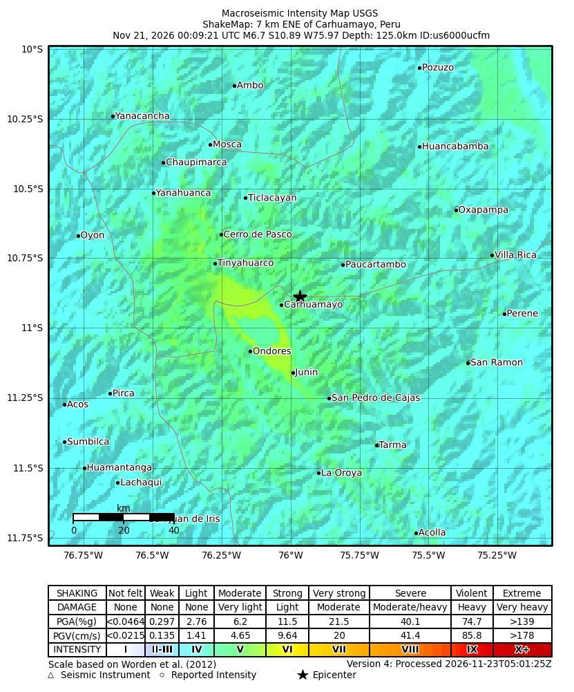
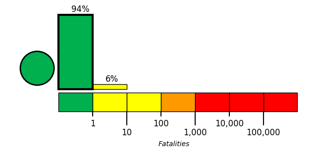
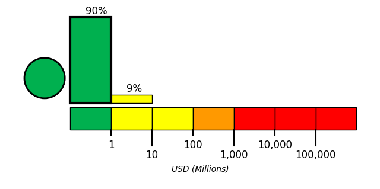

Introduction
On November 20, 2026, at approximately 19:09 local time (America/Lima; 2026-11-21 00:09 UTC), a magnitude 6.7 earthquake, with a reported depth of 125 km, occurred 7 km ENE of Carhuamayo, Peru. The USGS epicenter was at -10.8889° latitude and -75.966° longitude.
The South American arc extends over 7,000 km, from the Chilean margin triple junction offshore of southern Chile to its intersection with the Panama fracture zone, offshore of the southern coast of Panama in Central America. It marks the plate boundary between the subducting Nazca plate and the South America plate, where the oceanic crust and lithosphere of the Nazca plate begin their descent into the mantle beneath South America. The convergence associated with this subduction process is responsible for the uplift of the Andes Mountains, and for the active volcanic chain present along much of this deformation front. Relative to a fixed South America plate, the Nazca plate moves slightly north of eastwards at a rate varying from approximately 80 mm/yr in the south to approximately 65 mm/yr in the north. Although the rate of subduction varies little along the entire arc, there are complex changes in the geologic processes along the subduction zone that dramatically influence volcanic activity, crustal deformation, earthquake generation and occurrence all along the western edge of South America.
Most of the large earthquakes in South America are constrained to shallow depths of 0 to 70 km resulting from both crustal and interplate deformation. Crustal earthquakes result from deformation and mountain building in the overriding South America plate and generate earthquakes as deep as approximately 50 km. Interplate earthquakes occur due to slip along the dipping interface between the Nazca and the South American plates. Interplate earthquakes in this region are frequent and often large, and occur between the depths of approximately 10 and 60 km. Since 1900, numerous magnitude 8 or larger earthquakes have occurred on this subduction zone interface that were followed by devastating tsunamis, including the 1960 M9.5 earthquake in southern Chile, the largest instrumentally recorded earthquake in the world. Other notable shallow tsunami-generating earthquakes include the 1906 M8.5 earthquake near Esmeraldas, Ecuador, the 1922 M8.5 earthquake near Coquimbo, Chile, the 2001 M8.4 Arequipa, Peru earthquake, the 2007 M8.0 earthquake near Pisco, Peru, and the 2010 M8.8 Maule, Chile earthquake located just north of the 1960 event.
Large intermediate-depth earthquakes (those occurring between depths of approximately 70 and 300 km) are relatively limited in size and spatial extent in South America, and occur within the Nazca plate as a result of internal deformation within the subducting plate. These earthquakes generally cluster beneath northern Chile and southwestern Bolivia, and to a lesser extent beneath northern Peru and southern Ecuador, with depths between 110 and 130 km. Most of these earthquakes occur adjacent to the bend in the coastline between Peru and Chile. The most recent large intermediate-depth earthquake in this region was the 2005 M7.8 Tarapaca, Chile earthquake.
Earthquakes can also be generated to depths greater than 600 km as a result of continued internal deformation of the subducting Nazca plate. Deep-focus earthquakes in South America are not observed from a depth range of approximately 300 to 500 km. Instead, deep earthquakes in this region occur at depths of 500 to 650 km and are concentrated into two zones: one that runs beneath the Peru-Brazil border and another that extends from central Bolivia to central Argentina. These earthquakes generally do not exhibit large magnitudes. An exception to this was the 1994 Bolivian earthquake in northwestern Bolivia. This M8.2 earthquake occurred at a depth of 631 km, which was until recently the largest deep-focus earthquake instrumentally recorded (superseded in May 2013 by a M8.3 earthquake 610 km beneath the Sea of Okhotsk, Russia), and was felt widely throughout South and North America.
Subduction of the Nazca plate is geometrically complex and impacts the geology and seismicity of the western edge of South America. The intermediate-depth regions of the subducting Nazca plate can be segmented into five sections based on their angle of subduction beneath the South America plate. Three segments are characterized by steeply dipping subduction; the other two by near-horizontal subduction. The Nazca plate beneath northern Ecuador, southern Peru to northern Chile, and southern Chile descend into the mantle at angles of 25° to 30°. In contrast, the slab beneath southern Ecuador to central Peru, and under central Chile, is subducting at a shallow angle of approximately 10° or less. In these regions of “flat-slab” subduction, the Nazca plate moves horizontally for several hundred kilometers before continuing its descent into the mantle, and is shadowed by an extended zone of crustal seismicity in the overlying South America plate. Although the South America plate exhibits a chain of active volcanism resulting from the subduction and partial melting of the Nazca oceanic lithosphere along most of the arc, these regions of inferred shallow subduction correlate with an absence of volcanic activity.

Building Damage
The Junín earthquake caused minor damage to homes in several parts of the region, according to Peru’s Defence Minister Rafael Belaunde [1]. TeleSUR subsequently reported hundreds of homes damaged and more than 850 people displaced, with Huánuco, Pasco and Junín identified as the hardest-hit regions [3]. A Ground News aggregation included an account of more than a hundred affected homes alongside a separate account reporting no material damage at that time [2].
Infrastructure Impact
Roads: TeleSUR reported that the magnitude 6.7 earthquake in central Peru’s Junín region blocked roads while emergency teams assessed the impact [4]. Power and other infrastructure: Reports described power cuts or outages and damage to infrastructure in the affected region [1][4]. Other accounts stated that no damage had been reported in the immediate aftermath [5][6][7][8][9][10].
Resilience and Recovery
During the earthquake, hundreds of people evacuated buildings in Lima’s Miraflores district, and residents in the capital were also reported to have fled outdoors [11][12]. Peru’s defense minister reported minor damage to homes in parts of Junín, electricity interruptions and restrictions on highway traffic, while initially stating that no harm to people had been reported [12]. The National Emergency Operation Center said the shaking was moderate to strong and that monitoring continued in vulnerable areas [15][14]. Later reports recorded one death and hundreds affected following the magnitude 6.7 earthquake; TeleSUR reported 16 injured and more than 850 displaced [13][3]. These later totals followed initial accounts reporting no fatalities or injuries [14][1].
PAGER Estimates
USGS PAGER tool estimated the fatalities to be in the green alert level, which is most likely less than 1 with a probability of 94%.
USGS PAGER tool estimated the economic loss to be in the green alert level, which is most likely less than 1 million dollars with a probability of 90%.


References
- [1] us.headtopics.com - https://us.headtopics.com/news/peru-earthquake-measuring-6-7-causes-landslides-and-power-90049990
- [2] ground.news - https://ground.news/article/one-deceased-reported-16-injured-and-850-injured-after-the-earthquake-of-6-7-in-peru
- [3] telesurenglish.net - https://www.telesurenglish.net/peru-one-dead-16-injured-6-7-quake
- [4] telesurenglish.net - https://www.telesurenglish.net/6-7-magnitude-earthquake-damages-in-peru
- [5] see.news - https://see.news/67-magnitude-earthquake-strikes-perus-andes-no-immediate-casualties-reported
- [6] tbsnews.net - https://www.tbsnews.net/world/magnitude-67-earthquake-hits-perus-andes-no-immediate-reports-casualties-or-damage-1609216
- [7] economictimes.indiatimes.com - https://economictimes.indiatimes.com/news/international/world-news/magnitude-6-9-earthquake-shakes-perus-andes-with-no-damage-or-casualties-immediately-reported/articleshow/136042429.cms
- [8] straitstimes.com - https://www.straitstimes.com/world/magnitude-6-9-earthquake-shakes-perus-andes-with-no-damage-or-casualties-immediately-reported
- [9] news9live.com - https://www.news9live.com/viral-news/peru-earthquake-news-anchor-continues-live-broadcast-as-6-9-magnitude-tremors-shake-studio-3026357
- [10] seneweb.com - https://seneweb.com/en/news/International/perou-seisme-de-magnitude-67-dans-le-centre-du-pays_n_999004251.html
- [11] news18.com - https://www.news18.com/agency-feeds/magnitude-6-8-earthquake-shakes-central-peru-no-immediate-damage-reported-10434975.html
- [12] arynews.tv - https://arynews.tv/6-7-magnitude-earthquake-hits-peru
- [13] deultimominuto.com - https://deultimominuto.com/en/world/new-magnitude-5-tremor-shakes-peru-after-earthquake-that-left-one-dead-and-hundreds-affected
- [14] trtworld.com - https://www.trtworld.com/article/738e26219495
- [15] jamaicaobserver.com - https://www.jamaicaobserver.com/2026/11/20/6-7-magnitude-earthquake-hits-central-peru